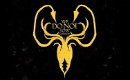

Robert Baratheon es presentado como el Rey de los Siete Reinos al inicio de la saga, un rey indolente que no posee ningún tipo de afecto a su cargo y que únicamente muestra afición por la comida, la bebida, las mujeres y la caza. Debido a esto, Robert delegó la función de gobernar en sus Manos, primero Jon Arryn y después Eddard Stark. Sin embargo, antes de coronarse rey, Robert era considerado un hombre carismático, audaz y valiente además de un formidable guerrero, aunque también calificado como simple, mujeriego e impulsivo. Pero tras subir al trono, Robert se dio a los excesos y comenzó a engendrar multitud de hijos bastardos.
Robert fue el heredero de Bastión de Tormentas y del señorío de las Tierras de Tormentas después de la muerte de sus padres. Cuando era un niño, Robert observó como el barco donde viajaban su padre y su madre naufragaba cerca de Bastión de Tormentas. Ante la ausencia de sus padres, Robert fue enviado como pupilo de Jon Arryn, Señor del Nido de Águilas y que carecía de hijos. Estando en el Valle, Robert se hizo amigo de Eddard Stark, que también era pupilo de Lord Arryn. Ambos se convirtieron en amigos inseparables y consideraron a Jon Arryn como un segundo padre. Lord Rickard Stark, Señor de Invernalia, deseaba unir su casa con las del sur, de modo que prometió a su hija Lyanna Stark con el propio Robert. Este se enamoró de ella al instante, seducido sobre todo por el carácter indómito de la muchacha. A lo largo de la obra se observa cómo Ned afirma que Robert nunca llegó a conocer a la verdadera Lyanna.
Robert decidió nombrar como su Mano del Rey a Jon Arryn. Este decidió pactar el matrimonio de Robert con Cersei Lannister, la hija de lord Tywin, considerando que su apoyo era imprescindible para sustentar su trono. Su matrimonio fue un fracaso y los hijos que llegaron a engendrar fueron fruto del incesto de Cersei con su hermano Jaime Lannister. A su vez, Robert delegó todo gobierno en Jon Arryn mientras se daba a los excesos y engendraba hijos bastardos. El reinado de Robert se caracterizó por los dispendios económicos en torneos, banquetes y fiestas que dejaron al reino arruinado.
Es un hombre guapo y carismático que gana amigos fácilmente, lo cual le hace popular dentro del pueblo. Se parece extremadamente a su hermano mayor Robert cuando este era joven, aunque más pequeño y delgado, heredando la altura y el cabello negro de los Baratheon. Aunque es querido y carismático, muchos señores poderosos en la corte secretamente lo consideran vanidoso y frívolo. Se lo describe como desdeñoso de la lectura, aunque le gusta cazar y las justas.
Tras la subida al trono de Robert, este nombró a Renly como su Consejero de Edictos, a la vez que lo nombraba señor de Bastión de Tormentas; eso causó conflictos con su hermano Stannis, al que solo le fue dado el título de Príncipe de Rocadragón, pese a que Bastión de Tormentas le pertenecía por derecho. a la comitiva del rey Robert que regresa a Desembarco del Rey; Sansa Stark queda obnubilada por Renly, a quien describe como el hombre más apuesto que ha conocido nunca.10 Renly asiste al encontronazo entre Joffrey Baratheon y Arya Stark, riéndose al oír que a Joffrey lo ha desarmado una niña.
Renly participa en el Torneo de la Mano, donde es derrotado por Sandor Clegane. También le enseña a Eddard Stark, la Mano del Rey, un retrato de Margaery Tyrell para preguntarle si se parece a la difunta Lyanna Stark. Poco después, en uno de los capítulos dedicados a Arya Stark, se descubre que formaba parte de un plan tramado junto a Loras Tyrell para que Robert tomara como amante a Margaery e hiciera sus planes más fáciles.
Renly está presente cuando Robert es herido de muerte en la cacería. Mientras Robert está moribundo, Renly le sugiere a lord Eddard que tomen control de los hijos de Robert y Cersei para evitar que ella se haga con el poder, pero lord Stark rehúsa; posteriormente, Renly huye de Desembarco del Rey junto a Ser Loras y sus hombres de la Casa Tyrell. Refugiado en Altojardín, Renly contrae matrimonio con Margaery Tyrell y consigue el apoyo de la poderosa Casa Tyrell, autoproclamándose Rey de los Siete Reinos, consiguiendo también el apoyo de las Casas de las Tierras de Tormentas. Renly descubre que su hermano Stannis también se ha proclamado rey y se dirige a Poniente para enfrentarse a él, por lo que parte a confrontarlo. En la víspera de la batalla, Renly recibe la visita de Catelyn Tully en Puenteamargo, que ha llegado para proponer a Renly una alianza con su hijo Robb y para arbitrar en la disputa entre Renly y Stannis. Renly acepta esa alianza con Robb, pero el parlamento con su hermano resulta salir mal, pues ninguno renuncia a sus aspiraciones al trono. Cuando se preparaba para acudir a la batalla, una sombra entra en la tienda de Renly y lo asesina delante de lady Catelyn y de Brienne de Tarth; dicha sombra fue conjurada por Melisandre, una sacerdotisa de R'hllor al servicio de Stannis.
Stannis es representado como el mediano de los tres hermanos Baratheon: Robert, Stannis y Renly. No se tienen muchos datos sobre la personalidad y forma de ser de Stannis, sin embargo, los personajes describen a Stannis como un hombre hosco, carente totalmente de sentido del humor, con un férreo sentido de la justicia y el deber, además de un experimentado comandante militar.
Cuando estalló la Rebelión de Robert, Robert nombró a Stannis castellano de Bastión de Tormentas. Stannis resistió un asedio de casi un año por parte de la Casa Tyrell que había permanecido leal al Trono de Hierro. Él y su guarnición resistieron en condiciones desesperadas, llegando incluso a comer perros y ratas para sobrevivir. Finalmente un contrabandista llamado Davos Seaworth rompió el bloqueo marítimo de los Tyrell y llevó provisiones al bastión, lo que permitió a Stannis y sus hombres resistir hasta que Eddard Stark puso fin al asedio. Para recompensar a Davos, Stannis le otorgó el título de ser y tierras, pero también le cortó las falanges de la mano izquierda, afirmando que una buena acción no limpiaba una mala y viceversa.Stannis comienza a ser influenciado por una sacerdotisa llamada Melisandre, la cual proclama que Stannis es un legendario héroe llamado Azor Ahai renacido. Stannis adopta la Fe de R'hllor lo que causa división entre sus hombres. Stannis se proclama como Rey de los Siete Reinos y declara como traidores a todos aquellos que no lo hagan, pero apenas consigue al apoyo de unas pocas casas. Stannis parte rumbo a Bastión de Tormentas, donde su hermano Renly es proclamado rey por las casas de las Tierras de Tormentas y el Dominio. Las negociaciones entre Stannis y Renly fracasan y entonces Melisandre da a luz a una sombra con el aspecto de Stannis que mata a Renly. Con Bastión de Tormentas bajo su control, Stannis decide partir rumbo a Desembarco del Rey. Los hombres de Stannis tratan de tomar la capital, produciéndose la Batalla del Aguasnegras. La flota de Stannis es destruida con fuego valyrio pero él y sus huestes logran desembarcar y asediar las murallas. Cuando parecía que la ciudad iba a caer, las casas Lannister y Tyrell atacan por la retaguardia a Stannis y le derrotan. Éste se refugia en Rocadragón, sin hombres ni flota.
La casa Bolton toma Invernalia, y Stannis sabe que necesita a los señores del Norte si quiere vencer a los Bolton, de modo que intenta ganarse su lealtad, pero fracasa; la Casa Mormont afirma que no reconocerá a más rey que a un Stark; los Glover también rehúsan; envía a Davos Seaworth a Puerto Blanco para tratar con la Casa Manderly, pero llegan noticias de que éstos lo han ejecutado; únicamente la Casa Karstark, liderada ahora por el castellano de Bastión Kar, Arnolf Karstark, le jura lealtad. Sin embargo, Arnolf secretamente se alía con los Bolton para traicionar a Stannis llegado el momento. Por otro lado, Stannis les ofrece a los salvajes unirse a su ejército a cambio de que le juren lealtad, o volver a las tierras más allá del Muro, de ese modo suma el apoyo de un gran número de ellos. Persuadido por el Lord Comandante Jon Nieve, Stannis parte hacia Bosquespeso y captura el bastión que se hallaba en manos de los Hombres del Hierro, capturando a Asha Greyjoy, su comandante. Tras eso, los Glover, agradecidos, le juran lealtad, de igual manera que los Mormont; también una facción de la Casa Umber, liderada por Mors Umber, decide unirse a él, aunque advierte que no se enfrentará a otros miembros de su misma Casa. Stannis decide atacar entonces Invernalia, donde se halla Ramsay Nieve, el bastardo legitimado de Roose Bolton. De camino a Invernalia, el ejército de Stannis sufre los estragos del frío y el hambre, pero capturan a Theon Greyjoy, que ha escapado de las garras de los Bolton. Posteriormente, en una carta que Ramsay envía al Lord Comandante Jon Nieve, afirma haber derrotado a Stannis y a sus huestes y que éstos murieron en el asedio sobre Invernalia.
La princesa Shireen Baratheon es la única hija del rey Stannis Baratheon y Selyse Florent. Shireen es descrita como una niña tímida, de actitud dulce pero de mirada triste. Padece una enfermedad que en la obra es calificada como psoriagrís, la cual hace que la piel adquiera un aspecto escamoso y pétreo.
La princesa Shireen reside en Rocadragón junto a su madre desde que era una niña. Su enfermedad hizo que se aislara socialmente y únicamente se la ve acompañada de su bufón. Cuando Jedri Tormenta llega a Rocadragón traba amistad con Shireen, insinuando que ella está enamorada del chico. Mantiene una actitud distante hacia Melisandre de la que desconfía, aunque esta trate de ganarse su confianza. Cuando Stannis parte rumbo al Muro, Shireen marcha junto a él y se hospeda en Guardiaoriente del Mar junto a su madre. Shireen es quemada en la hoguera a manos de Melisandre con el consentimiento de Stannis, debido a que Melisandre afirmó que era un sacrificio necesario si quería vencer en la guerra a los Bolton.
|
|

|
|
|
|
|